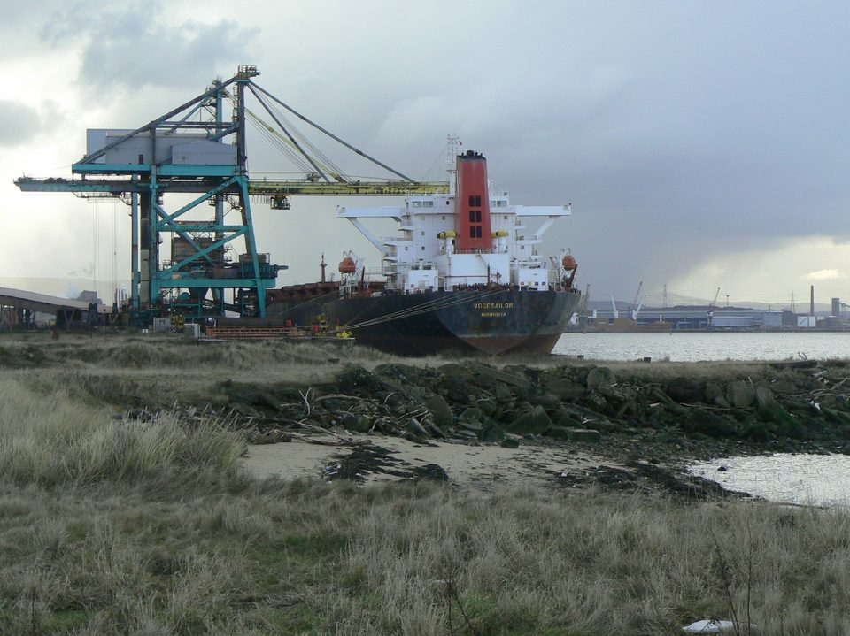
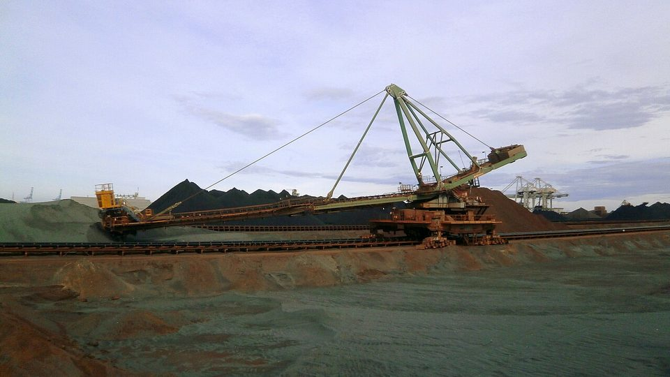
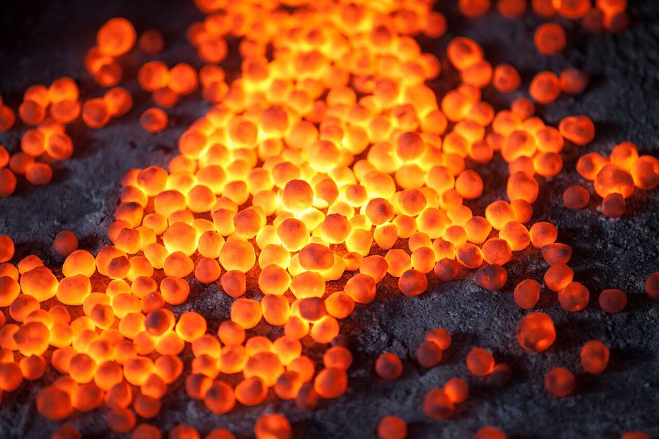
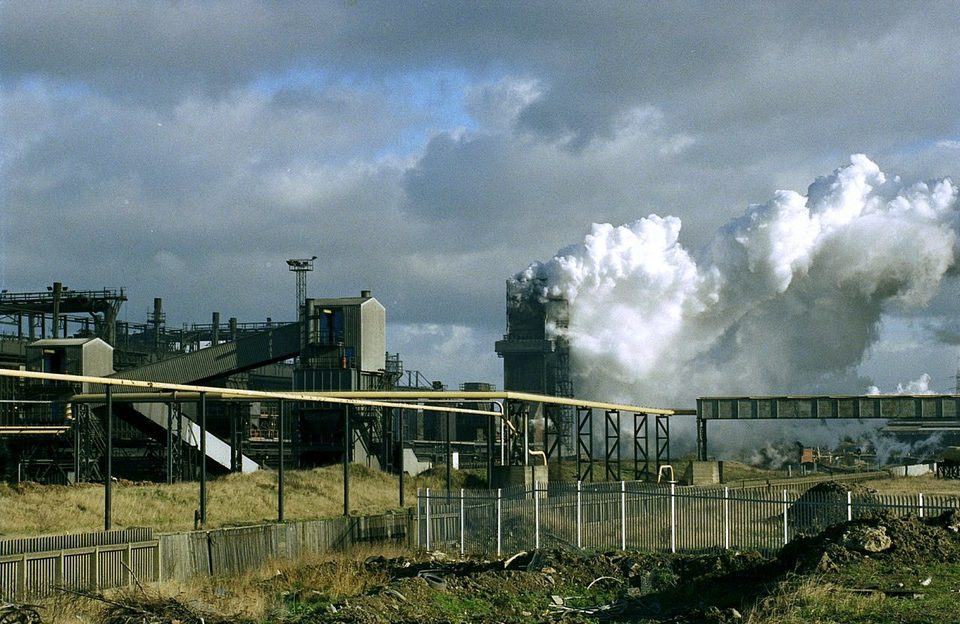
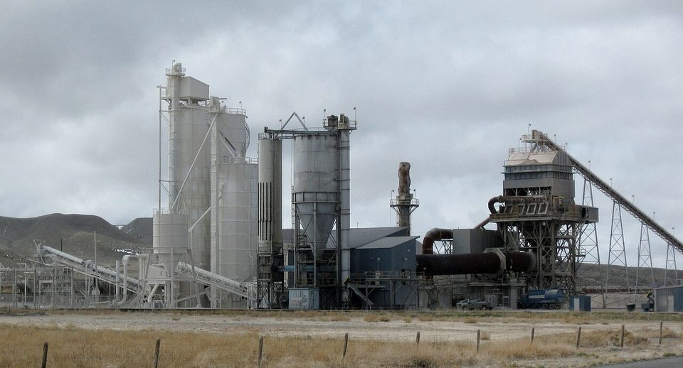
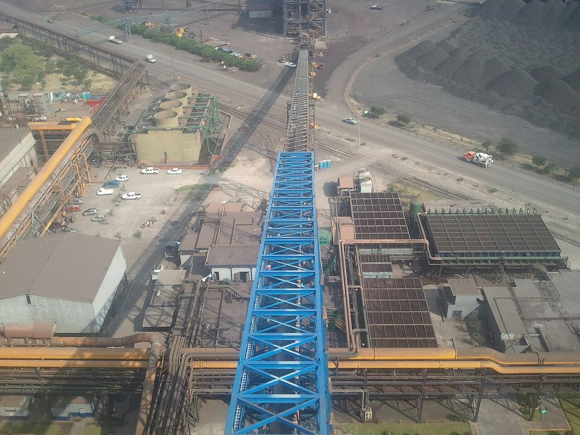

STEEL 101 · RAW MATERIAL PREP · 2026.10
進爐之前：鐵礦、焦煤與石灰從港口到高爐的處理流程
鋼鐵潮流工作室 · 發布 2026.10.12

本期重點
前三課講了原料從哪裡來、怎麼漂洋過海。但船靠港之後，原料並不是直接倒進高爐：鐵礦要混勻、燒結或造球，煤要先煉成焦炭，石灰石要破碎篩分，一部分還得燒成生石灰；進爐前再篩一次、秤一次，才從爐頂分層裝進去。這一課沿著原料的路線，從碼頭一路走到高爐爐頂。
- 港口只是第一關。 卸船、輸送、堆置混勻的目的，是讓進爐前的成分與粒度穩定，高爐才煉得穩。
- 鐵礦分三路。 粉礦先燒結成塊，塊礦篩分後直接入爐，磨細的精礦則造成球團；三種都要控制在高爐「吃得順」的粒徑。
- 煤要變焦炭才能進爐。 煉焦煤在焦爐裡隔絕空氣加熱十幾小時，變成多孔、有強度的塊焦，才撐得住爐內數千噸爐料。
- 石灰有兩種身分。 石灰石當熔劑，多在燒結階段加進去；生石灰則用在燒結黏結，以及後段的煉鋼與鐵水脫硫。
- 最後還有一道篩。 碎粉會堵住爐內氣流，所以每一種爐料入爐前，都要在料倉再篩一次。
流程總覽：三條線，匯入同一座高爐
下圖把鐵礦、煤、石灰石三條線畫在一起。實線是主要物流，虛線代表跨線的支援：焦炭篩出的碎焦粉要送去燒結當燃料，石灰石的細粒與生石灰也要送去燒結。手機上可以左右滑動看全圖。
本站繪製之示意圖，依一般一貫作業鋼廠的流程簡化；實際配置、粒徑與條件依各廠而異。
第一站：港口卸船與輸送
散裝船靠上專用碼頭後，由卸船機把貨從貨艙取出，放進漏斗，再落到輸送帶上，一路送進原料場。卸船速度決定船在港停留多久，粉塵與掉料則是港區與鄰近社區最敏感的環境議題，因此卸料點、輸送帶與轉運站常以密閉、噴霧或防塵網處理。
以中鋼為例，官網描述的流程是：進口的煤、鐵礦砂與石灰石卸船後，先放進原料儲存場；煤從這裡送往煉焦廠，鐵礦與石灰石則送往燒結廠。換句話說，三種原料在碼頭到料場這一段共用同一套物流，到了料場才開始分流。
第二站：堆置與混勻

不同礦山、不同船次的鐵礦，含鐵量、矽、鋁與水分都有起伏；煤也是如此。如果直接送進製程，高爐的鐵水成分與爐況就會跟著上下震盪。鋼廠的做法是「堆料混勻」：堆料機沿著長條形料床往復移動，把進料一層一層鋪上去，料堆有人字形（chevron）與條狀（windrow）等堆法；取料機再沿料堆的橫截面取料，每一斗都混合了所有層次的料，成分因此被均勻化。
堆取料設備的規模相當驚人。德國 BEUMER 的資料列了一座南韓的圓形堆取料機：堆場直徑 124 公尺，鐵礦處理能力每小時 1,210 噸；另一座澳洲的堆取料機處理硬煤，每小時可達 8,000 噸。鐵礦與煤分場堆放，避免互相汙染。
鐵礦：粉礦、塊礦、球團，各走各的路
混勻後的鐵礦，依粒徑與品質分成三條路。高品位礦山出貨的塊礦，破碎篩分後可以直接入爐；占大宗的粉礦（粒徑多在 6 毫米以下）無法直接入爐，會堵住氣流，要先燒結成塊，全球高爐用的鐵礦約有七成走這條路；而低品位礦經過選礦得到的細粉精礦，則要造成球團。
| 爐料 | 原料 | 處理方式 | 入爐粒徑 | 特性 |
|---|---|---|---|---|
| 燒結礦 | 粉礦、焦粉、熔劑 | 配料、造粒、點火燒結、破碎冷卻、篩分 | 約 5–30 mm | 含石灰成分，高爐不必另外加太多熔劑（自熔性）；鹼度（CaO／SiO₂）約 1.6–2.1 |
| 塊礦 | 高品位直運塊礦 | 破碎、篩分 | 約 10–30 mm | 不必燒結，省能源；但適合的礦源有限 |
| 球團 | 磨細精礦 | 加膨潤土造球、焙燒約 1,300°C | 約 8–20 mm | 含鐵 63–68%，粒徑均勻、孔隙率 25–30%，透氣性與還原性佳 |
燒結：把粉礦燒成多孔的「礦塊」
- 配料粉礦、焦粉、熔劑與返礦依配方秤量；焦粉與熔劑先破碎到 3 毫米以下
- 混合造粒在轉鼓內加水混合，滾成小球，增加床層透氣性
- 布料點火先鋪 25–50 毫米鋪底料，再鋪混合料；表層以焦爐煤氣或高爐煤氣點火
- 抽風燒結由下方抽風，燃燒帶由上往下移動，峰值溫度多在 1,300°C 以上，顆粒表面熔融黏結
- 冷卻篩分破碎、冷卻到 150°C 以下；約 5 毫米以下的碎粉當返礦回到配料
燒結的關鍵在「透氣」與「配比」。混合料要先造粒，才能讓空氣穿過料層；燃燒帶要剛好在台車尾端燒穿，靠台車速度控制。焦粉就是燒結的燃料，用量不多，卻是從煉焦廠篩出來的碎焦，這也是圖上焦炭那條線向上連到燒結廠的原因。

球團：把細粉滾成圓球
球團的原料是磨得很細的精礦，大約八成小於 45 微米，加入膨潤土當黏結劑後，在圓盤造球機裡滾成直徑 8–16 毫米的生球，接著在帶式焙燒機或鏈篦機—迴轉窯中依序乾燥、預熱、焙燒；焙燒溫度約 1,250–1,340°C，典型值約 1,300°C。球團含鐵量高、雜質少，又是圓球狀，爐內氣流好通過，是電爐直接還原（DRI）路線的關鍵原料，在高爐裡也能代替一部分塊礦。
煤：煉成焦炭，才有資格進高爐
焦炭在高爐裡同時扮演三個角色：燃料，供給熱量；還原劑，奪走鐵礦裡的氧；還有骨架，在數千噸爐料底下撐出一條條讓氣體與鐵水通過的縫隙。所以煉焦煤進爐前必須先在焦爐裡「乾餾」。
- 配煤與粉碎。 不同煤種依比例配合，粉碎到約 80% 通過 3 毫米篩孔，最大粒徑約 15 毫米。
- 裝爐。 焦爐組由 20 到 100 個炭化室與燃燒室交錯排列；每個炭化室長約 15–20 公尺、高 6–9 公尺、寬卻只有 500–600 毫米。裝煤車從爐頂的裝煤孔把煤倒進去。
- 乾餾。 隔絕空氣，從側壁加熱到 900–1,100°C，高爐用焦炭通常需要 15–18 小時，到爐中心溫度約 950–1,000°C 才算煉好。
- 出焦與熄焦。 焦炭收縮後與爐壁分離，由推焦機一口氣推進熄焦車。赤熱的焦炭必須馬上冷卻：濕式熄焦用水噴淋，焦炭會吸進約 2–6% 的水分；乾式熄焦則讓焦炭由約 1,000°C 在密閉槽內被循環的惰性氣體冷卻到約 200°C，熱量回收產生蒸汽發電，每噸焦炭約可產 0.45 噸蒸汽，粉塵與冷卻用水也大幅減少，焦炭強度還略有提升。
- 篩分。 約 25 毫米以上的塊焦送高爐；10–25 毫米左右的「小塊焦」通常混在礦石層一起入爐，部分取代焦炭；10 毫米以下的焦粉則全數送去燒結當燃料。
- 副產品。 乾餾時冒出的焦爐煤氣主要是氫與甲烷，回收後當廠內燃料；另可回收焦油、氨（做成硫酸銨）與苯。

| 指標 | 意義 | 高爐想要的方向 |
|---|---|---|
| CSR（反應後強度） | 上述反應後的焦炭，放進轉鼓轉 600 轉，10 毫米以上的比例就是 CSR | 愈高愈好 |
| CRI（反應性） | 焦炭與二氧化碳反應的程度；常用試驗是在 1,100°C 的二氧化碳中反應 2 小時 | 愈低愈好 |
| M40／M10（轉鼓強度） | M40 看抗破碎，M10 看抗磨耗 | M40 愈高、M10 愈低愈好 |
| 灰分 | 焦炭中不能燃燒的礦物質 | 愈低愈好：灰分高會降低含碳量，並增加爐渣量 |
| 硫 | 隨煉焦煤帶入，幾乎一路進到鐵水 | 愈低愈好，取決於配煤 |
| 水分 | 熄焦後吸入的水 | 低而穩定，爐內才好控制 |
焦炭用量也是高爐效率的指標。早期高爐煉一噸鐵水要用掉約 4 噸焦炭；現代日產量超過一萬噸的大型高爐，每噸鐵水的焦炭用量已降到 400 公斤以下，其餘靠噴吹煤粉等方式補足。
石灰：石灰石、生石灰與白雲石

鐵礦裡除了鐵，還夾著矽、鋁等「脈石」。它們熔點高，不處理就會讓爐渣黏稠、排不出去。鋼廠的辦法是加入含鈣的熔劑：氧化鈣（CaO）與二氧化矽（SiO₂）結合，形成低熔點、流動性好的爐渣，浮在鐵水上方，順利和鐵水分開。所以石灰雖然不起眼，卻是造渣不可少的一員。
| 原料 | 化學組成 | 處理 | 去向與作用 |
|---|---|---|---|
| 石灰石 | CaCO₃ | 破碎篩分；熔劑類粒徑 90% 以上小於 3 毫米，塊狀約 10–40 毫米 | 細粒進燒結，在燒結時分解成 CaO，讓燒結礦含鈣；塊狀可直接加入高爐 |
| 生石灰 | CaO | 石灰石在石灰窯中煅燒，約 900°C 以上，通常約 1,100°C；CaO 純度要求 90% 以上，塊狀約 10–40 毫米 | 細粒加進燒結混合料，改善黏結、燒結礦強度與機台產量；更大宗的用途在轉爐煉鋼（每噸粗鋼約 65 公斤）與鐵水脫硫 |
| 白雲石、煅燒白雲石 | CaCO₃·MgCO₃、CaO·MgO | 破碎篩分，或煅燒後使用 | 提供氧化鎂（MgO），調整爐渣流動性；煉鋼用於延長爐襯壽命 |
為什麼不是全部在高爐裡加石灰石？因為石灰石分解（CaCO₃ → CaO + CO₂）要吸收大量熱，在高爐裡進行，等於多燒焦炭。把它先放進燒結機分解，高爐就少花力氣，所以現代高爐多用「自熔性燒結礦」，熔劑主要在燒結階段加入。燒結用的熔劑要先破碎到 90% 以上小於 3 毫米，才能和焦粉、粉礦均勻混合。
最後一關：爐前料倉與爐頂佈料

燒結礦、球團、塊礦、焦炭與熔劑各有自己的料倉，每個料倉可以存放數小時的用量。從料倉放料時，每一種料都再過一次篩，把運輸與堆存過程產生的碎粉篩掉，再依配方秤量，交給輸送帶送到爐頂。篩下的碎粉不會浪費：碎燒結礦變返礦，碎焦炭變焦粉，都回頭去做燒結。
進爐料典型粒徑區間（毫米）
資料來源：ISPATGURU〈Preparation and Charging of Blast Furnace Burden〉典型值；實際依各座高爐設計而異。各家資料對高爐焦炭粒徑的說法略有出入，常見 25–80 毫米，小塊焦約 10–25 或 10–30 毫米。
粒徑為什麼要管得這麼細？因為高爐是一座上面裝料、下面吹風的逆流反應器：熱風由下往上穿過料柱，料柱的「透氣性」決定爐子能不能穩定、高產。碎粉塞進縫隙，氣流就容易走偏或被擋住，爐況立刻變差。粒徑太分散的料，在裝卸過程中還會自然分層（偏析），也會破壞透氣性。
爐頂以「旋轉溜槽」把料分配到爐內：一批焦炭、一批礦石，交替分層。溜槽的角度與轉動圈數可以調整，用來控制料面形狀，進而影響煤氣流分布。入爐之後，鼓風約 1,200°C 的熱風、約 3.8 大氣壓吹進風口，風口前的火焰溫度可達約 2,150°C，煉出約 1,500°C 的鐵水。
對台灣鋼鐵業的意義
- 流程很短，但環保壓力集中在這一段。 原料從港口到高爐前，是粉塵、揮發性有機物與二氧化碳的主要來源之一，鋼廠因此陸續投入防塵網、密閉輸送與焦爐更新。中鋼 2016 至 2018 年的空污改善投資約 26.7 億元，包含 2 座燒結廠脫硫設施與原料儲存場南側防塵網；2018 至 2024 年的煤鐵礦輸送流程改造及輸送設備拆建工程則約 27.7 億元。
- 焦爐是減碳與空污的重點。 中鋼董事會 2020 年通過焦爐及乾式熄焦工程第一期，約 94.3 億元，全案規劃約 418 億元。依當時公布的預估，第一期完成後每年可減少揮發性有機物約 73 噸（約 63%）、粒狀物排放約 56%，單位能耗降約 10%，二氧化碳減量約 14.6 萬噸，並增加發電約 2.73 億度。
- 配煤開始用 AI。 中鋼 2024 年發表 AI 智慧配煤技術，建立「焦炭強度 AI 預測平台」，協助焦爐操作人員即時調整配煤比例，穩定焦炭強度，並提高採購高性價比冶金煤的彈性。平台先在四階煉焦爐導入，估計每年可降低原料成本約 7,500 萬元。
- 爐料配方也是減碳題。 燒結本身耗能高、排碳多，中鋼的低碳高爐研究，把在爐料中加入熱壓塊鐵（HBI）列為降低燒結碳排的方向之一，並規劃高爐噴吹富氫氣體的單一風口試驗。
- 石灰與焦炭的品質，直接反映在鐵水成本。 煤價、焦炭品質、石灰石與生石灰的價格與供應，都與前面幾課的礦價、運費一起，構成煉鐵成本的完整拼圖。
延伸閱讀
- 原料怎麼漂洋過海：鐵礦砂、廢鋼、焦煤的海運路線與進出口版圖
- 鐵礦砂從哪裡來：全球礦區分布與開採技術
- 高爐吹氫減碳 43%：日本製鐵 Super COURSE50 試驗全解析
- 歐洲綠鋼進度：氫氣退潮、電爐接棒
資料來源
- Understanding Sinter and Sinter Plant Operations（ISPATGURU）
- Coal Carbonization for Coke Production（ISPATGURU）
- Metallurgical Coke（ISPATGURU）
- Preparation and Charging of Blast Furnace Burden（ISPATGURU）
- Iron Ore Pellets and Pelletizing Process（ISPATGURU）
- Lime and Calcined Dolomite for Use in Steel Plant（ISPATGURU）
- Iron Ore Agglomeration（Lhoist）
- FAM Stockyard Technology（BEUMER Group）
- 中鋼公司 產品與製程（中國鋼鐵）
- 中鋼公司低碳高爐煉鐵技術開發路徑（中華民國冶金及材料工程學會，杜憲文）
- 中鋼運用AI智慧配煤技術 降減原料採購成本（2024-04-17）（台灣新聞網）
- 改善空汙 中鋼砸27億元更新設備（ETtoday）
- 中鋼董事會通過焦爐及乾式熄焦工程第一期（2020-03-23）（中央社）
內容僅供產業資訊參考，不構成投資建議。新聞版權屬原出處所有。